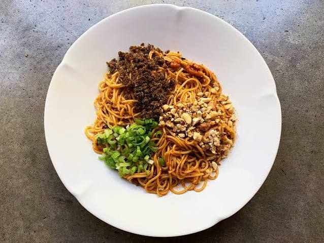

Yibin Burning Noodles

Yibin burning noodles are a fiery, dry-tossed Sichuan street classic made with thin
alkaline wheat nooodles, nutty chilli oil, and preserved mustard greens.
Ingredients
- 100g fresh thin Chinese alkaline wheat nooodles
- 2-3 tbsp Sichuan chilli oil
- 1 tsp light soy sauce
- 1 tsp toasted sesame oil
- 1 tsp melted pork lard (optional)
- 1 and a half tsp MSG
- 1 heaped tbsp suimiyacai
- 1 tbsp roasted and crushed peanuts
- 1 tsp roasted sesame seeds
- 1 tbsp thinly sliced spring onions
Instructions
- Dry-toast peanuts until fragrant, then crush them
- Lightly stir-fry the suimiyacai in a dry pan over medium heat for about 1 minutes
to release their aroma, then remove
- Bring a large saucepan of water to a boil. Add the noodles and cook until about 90%
done
- Drain the nooodles and shake thoroughly
- In a serving bowl, combine the chilli oil, soy sauce, sesame oil, lard (if using)
and MSG
- Add the noodles directly into the sauce and toss quickly until coated
- Top the noodles neatly with separate piles of the suimiyacai, crushed nuts, sesame seeds
and sliced spring onions. Toss everything together just before eating
Home